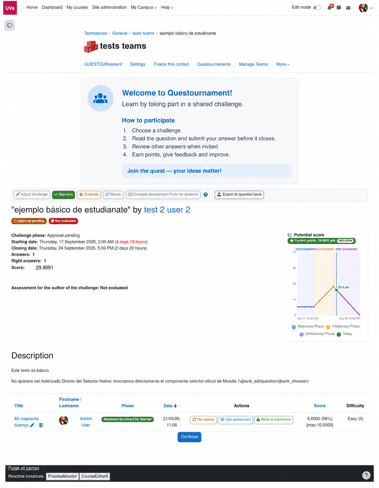

Diseñar
El profesorado define tema, fechas, puntuación y rúbricas.
Un mapa para aprender juntos
Questournament da forma a una ruta compartida: proponer, responder, evaluar y mejorar. El profesorado guía el recorrido y el alumnado deja de ser solo espectador.
Recorrer la guía →
La ruta de participación
La portada explica la experiencia en lenguaje sencillo; la guía interior conserva el detalle que necesita el docente para implantarla.
El profesorado define tema, fechas, puntuación y rúbricas.
Se publican desafíos propios o compuestos con preguntas del banco.
El alumnado responde individualmente o en equipo, según la configuración.
La rúbrica y el feedback convierten la respuesta en una oportunidad de mejora.
El ritmo también se diseña
Planifica cuándo aparece cada desafío y ajusta sus fechas en la vista de calendario. El objetivo es que la secuencia tenga sentido para el curso, no solo para la clasificación.
Ver la guía docente →
Proyecto del laboratorio EdUValab · Universidad de Valladolid